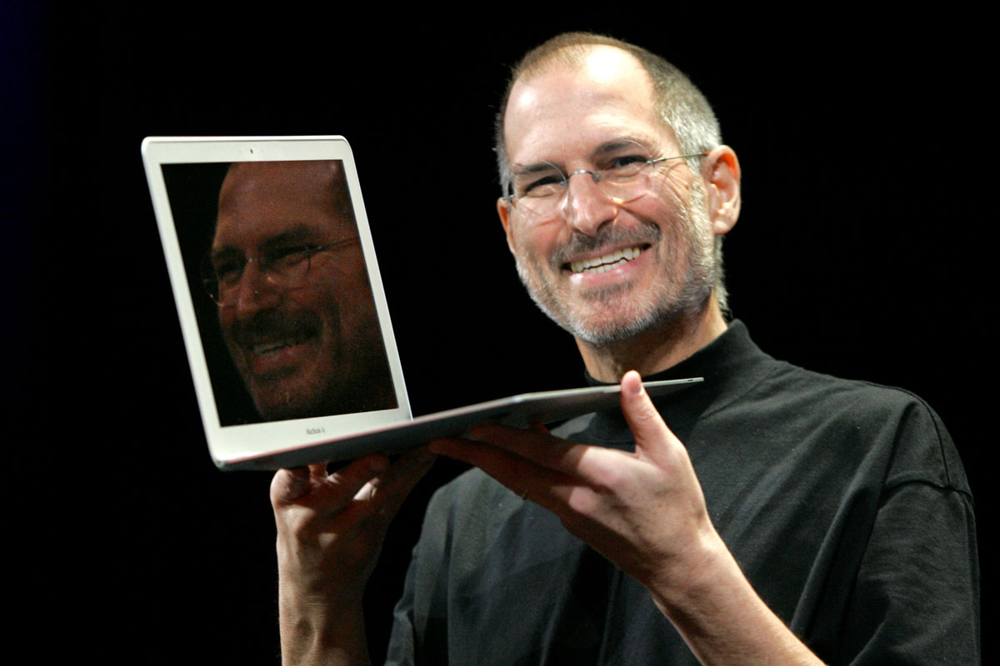
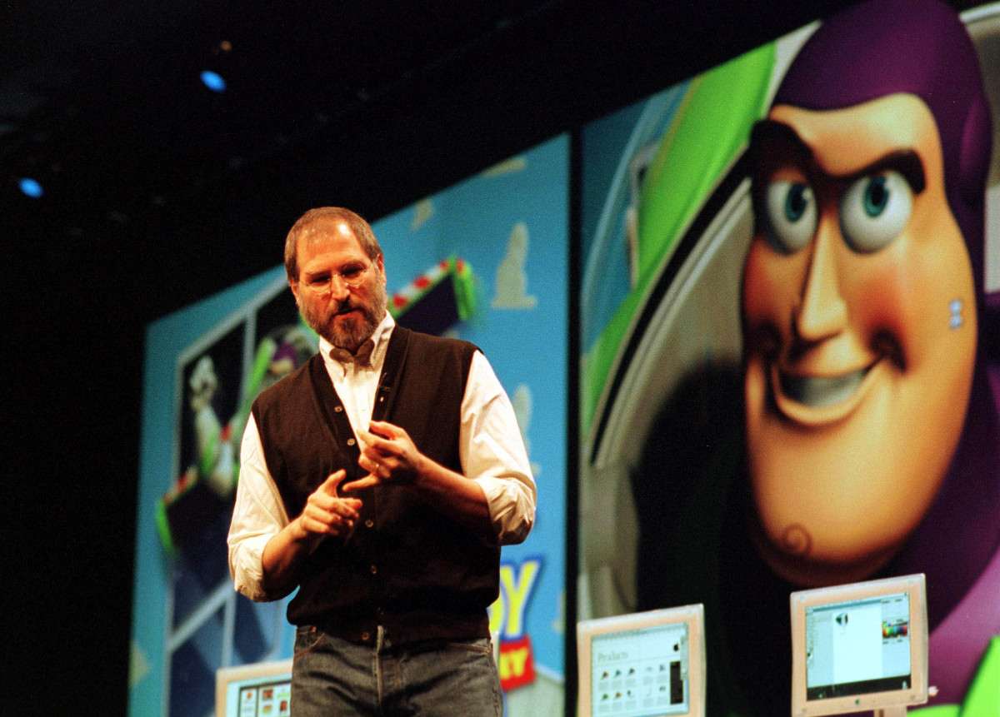

نگاهی مختصر به زندگی نامه استیو جابز
حالت شب

امیر محمد محمدی قره باغ
استیو پاول جابز در 24 فوریه 1955 میلادی در سانفرانسیسکو متولد شد ناپدری اش پاول یک مکانیک موتور با بدنی خالکوبی شده و قدی به بلندای 183 سانتی متر و نامادری اش کلارا هاگوپیان فرزند دو مهاجر ارمنستانی بود استیو به همراه ناپدری و نامادری اش در شهرستان Santa Clara زندگی می کرد که به دره سیلیکون مشهور شد
علاقه به تکنولوژی
ناپدری اش اتوموبیل های قراضه را می خرید و آنها را تعمیر می کرد و می فروخت و کار های فنی خانه را انجام می داد اما استیو از تعمیر اتوموبیل خوشش نمی آمد و دوست نداشت که دست هایش کثیف بشوند و به همین دلیل به شاخه ای از تکنولوژی علاقه داشت که دست هایش را کثیف نکند استیو به تکنولوژی های شرکت اچ پی علاقه نشان می داد و همه این ها او را به کامپیوتر علاقه مند تر کردند به همین دلیل جابز جوان با استیو وزنیاک آشنا شد که او هم مثل او عاشق تکنولوژی بود وازنیاک مثل استیو در تجارت استعداد نداشت اما برنامه نویس خوبی بود جابز وارد دانشگاه Reed شد اما به دانشگاه علاقه نشان نمی داد به همین دلیل بعد یک ترم انصراف داد کمی بعد در شرکت اتاری مشغول به کار شد
تاسیس اپل
وقتی وازنیاک با کامپیوتر Altair8800 آشنا شد به فکر ساختن کامپیوتر خود افتاد بعد این اتفاق در سال 1976 جابز و وازنیاک در گاراژ خانه پدر جابز شرکت اپل را تاسیس کردند در واقع آنها برد کامپیوتر را مونتاژ می کردند و آن را به فروشندگان کامپیوتر می فروختند کمی بعد با مهارتی که استیو در تجارت داشت توانست یکی از مدیران ارشد اینتل را قانع کند تا در اپل 250 هزار دلار سرمایه گذاری کند و همین موضوع باعث شد تا بنیانگذاران اپل تبدیل به میلیونر شوند در سال 1981 استیو پروژه ای به نام مکینتاش را به وجود آورد که یک کامپیوتر کوچک و با قیمت مناسب بود و طراحی و ساخت این دستگاه سه سال طول کشید مکینتاش موفق نشد دلیل عدم موفقیت هم جان اسکالی مدیر عامل وقت اپل بود که قبلا در شرکت پپسی به قول خود استیو آب قند می فروخت در سال 1985 هیات مدیره تمامی اختیارات استیو را گرفتند به همین دلیل هم جابز از اپل خارج شد و تمام سهامش در اپل را فروخت ،شرکت NeXT را تاسیس کرد و چند نفر از کارمندان اپل را هم استخدام کرد اما این شرکت موفق نشد
آیپاد و پیکسار
کمی بعد استیو قسمت گرافیک شرکت لوکاس فیلم را خرید و آن را پیکسار نامید( Pixar ) پیکسار وضعیت خوبی نداشت تا اینکه با دیزنی قرارداد بست و بعد از انیمیشن داستان اسباب بازی اوضاع پیکسار 180 درجه چرخید در همین زمان اوضاع اپل خوب نبود مدیر عامل وقت اپل یعنی گیل املیو NeXT را به قیمت 400 میلیون دلار خرید و همین باعث شد که جابز دوباره به اپل بازگردد و بعد از ضرر مالی 700 میلیون دلاری املیو جابز به طور موقت مدیر عامل اپل شد سال 1998 بود که کامپیوتر iMac توسط اپل معرفی شد و دو سال بعد اپل سیستم عامل انحصاری خودش یعنی Mac OS X را معرفی کرد در آن هنگام بود که جابز دیگر مدیرعامل موقت نبود و رسما مدیر عامل اپل شد جابز متوجه علاقه جوانان به موسیقی شده بود و می خواست سرویس اشتراک موسیقی راه اندازی کند که در آن حقوق هنرمندان هم رعایت شود به همین دلیل آیتیونز معرفی شد کمی بعد هم دستگاه کوچکی با شعار هزار موسیقی در جیب شما معرفی کرد با نام آی پاد که انقلابی در زمینه پخش کننده موسیقی بوجود آورد
معرفی آیفون
استیو تیمی از متخصصان را کنار هم آورده بود و داشتند روی یک پروژه مخفی کار می کردند شرکت کوچکی توانسته بود صفحه نمایشی لمسی خازنی اختراع کند ،اپل آن را بی سر و صدا خرید و استیو تصمیم گرفت این نوع صفحه را روی موبایل به کار ببرند پس از دو سال در سال 2007 جابز از آیفون رونمایی کرد که محصول انقلابی اپل در زمینه تلفن همراه بود همین دستگاه جایگاه اپل را چندین پله بالا برد و موفقیتی که نسیب اپل شد بسیار بالاتر از چیزی بود که انتظار می رفت در همین اوضاع جابز درگیر بیماری سرطان پانکراس بود و می دانست مدت زمان زیادی زنده نخواهد ماند تیم کوک(مدیر عامل فعلی اپل) را به عنوان جانشینش انتخاب کرد استیو جابز در 5 اکتبر 2011 درگذشت